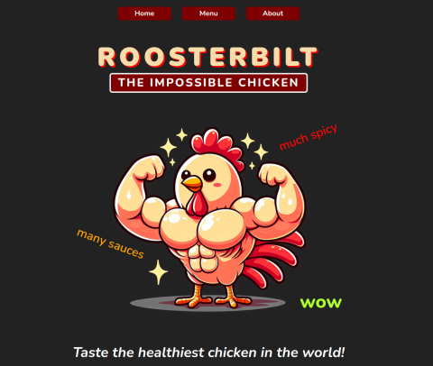

My work

Admin Dashboard


Admin Dashboard design created with CSS Grid and Flexbox layout method.

Weather App
Weather forecast website created using Visual Crossing API, async and await functions

Todo List
Todo List created using Classes and Modules. Used Web Storage API (localStorage) for persistence.
Battleship
Battleship game played in browser against a computer. Applied Test Driven Development (TDD) principles using Jest.

Tic Tac Toe
Tic Tac Toe game played in browser. Learning to use IIFE (module pattern) before ES6 Modules.

Restaurant
Restaurant page created with DOM manipulation through javascript. Used ES6 module for each page.